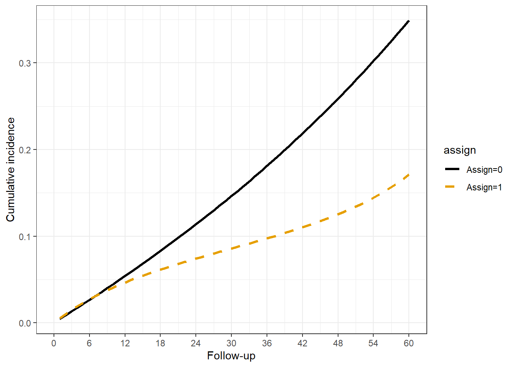

Rows: 104,910
Columns: 9
$ id <int> 1, 1, 1, 1, 1, 1, 1, 1, 1, 1, 1, 1, 1, 1, 1, 1, 1, 1, 1, 1, 1, …
$ time <int> 1, 2, 3, 4, 5, 6, 7, 8, 9, 10, 11, 12, 13, 14, 15, 16, 17, 18, …
$ censor <int> 0, 0, 0, 0, 0, 0, 0, 0, 0, 0, 0, 0, 0, 0, 0, 0, 0, 0, 0, 0, 0, …
$ event <int> 0, 0, 0, 0, 0, 0, 0, 0, 0, 0, 0, 0, 0, 0, 0, 0, 0, 0, 0, 0, 0, …
$ enter <dbl> 0, 1, 2, 3, 4, 5, 6, 7, 8, 9, 10, 11, 12, 13, 14, 15, 16, 17, 1…
$ exit <int> 1, 2, 3, 4, 5, 6, 7, 8, 9, 10, 11, 12, 13, 14, 15, 16, 17, 18, …
$ age <dbl> 70, 70, 70, 70, 70, 70, 70, 70, 70, 70, 70, 70, 70, 70, 70, 70,…
$ X <int> 0, 0, 0, 0, 0, 0, 0, 0, 0, 0, 0, 0, 0, 0, 0, 0, 0, 0, 0, 0, 0, …
$ X_t <int> 0, 0, 0, 0, 0, 0, 0, 0, 0, 0, 0, 0, 0, 0, 0, 1, 0, 0, 0, 0, 0, …Parametric Discrete Time Analyses
WORK IN PROGRESS
Introduction
Time is almost always discretely measured.
Although not directly related to target trial emulation or a clone-censor-weight approach, most TTE/CCW methods require a thorough understanding of how time to event analyses are executed, and in particular parametric discrete-time analyses. I cover some basic procedures and guidance here. There are a number of very comprehensive papers and textbooks which go into this topic.(Tutz and Schmid 2016; Welchowski et al. 2022)
It is not necessarily the case that any given project will have a failure time (time to event) outcome, but it is quite common in my field and describes most research projects I am involved with so that is what I focus on.
Time-to-event
It is assumed here that the basic measurement of the outcome includes a failure time (time at which follow-up ceases) and a binary indicator for whether the event occurred or not by that time point. The measure presumes a clear origin or time zero, and knowledge of the scale or unit of time (days, years etc.). In most applied work, the event can only occur once. For those with no observed event-time, meaning the event did not occur through the last-observable time point, the observed time is some other endpoint (death, administrative end, loss-to-follow-up), these non-events are referred to as “censored” meaning follow-up ceased at that time. The observed time for a person must be the minimum of event or censoring time.
Definitions and Notation
The outcome need not be death, but often is, and individuals must be alive to experience events, censoring etc. so most of the terminology and notation refer to “survival”.
The letter T/t is typically used to denote time, where T may refer to total time observed, and t an individual time-period, \(T = {1, ..., t}\). Since time is usually discretely defined, for example as days, then \(t\) can be thought of as an interval, \(t=1\) meaning from the end of the prior interval (day 0) through the next (but not including) interval, day 2. \(T=t\) would mean a event or censor time occurred in interval \(t\). A binary indicator for whether the event occured \(E = {0, 1}\).
Survival probability, \(S(t) = Pr(T>t)\), is the probability of survival beyond time-point t.
Cumulative incidence, \(R(t) = Pr(T<=t)\), is the 1-probability of survival, the probability the event occurred up to and including time-point t.
Hazard, \(h(t) = Pr(E_t=1|E_{t-1}=0)\), the probability of an event at time t, conditional on event-free survival up to that point, sometimes described as the “instantaneuous hazard”.
Cumulative Hazard, \(H(t)\)
The terms are related, \(S(t) = 1 – R(t)\). \(h(t)=R(t)/S(t)\), \(H(t) = -log[S(t)]\) and \(S(t) = e –H(t)\).
Data
Proper setup of the data is key here, the data is a person-period dataset. Where each row represents an interval of time for a person (or other observation unit). I make it simpler by having the unit of time interval be consistently 1. However, this is not actually strictly required. The time intervals can be uneven, like days 1-2, 3-7, 10-20 etc. So for each person there is a record id, a time variable, and an indicator for it a person censors censor or experiences the event during a period. The enter, exit variables can be important if the time units are intervals (e.g. 30-day) or uneven. Some variables like age may be fixed at the baseline time zero value, while others like X_t vary across time.
Note
It is important to be consistent in your rules about whether event is counted at the beginning or end of an interval. I typically use of the end, exit time. This can get tricky when the interval is wide, like 30 days and you will have ties where people experience events, are censored or treated all in the same interval period.
Regression
The following may generically be referred to as ‘outcome’ models to distinguish them from the weight estimation step (which also may perform similar analyses) in the clone-censor-weight approach.
Pooled Logistic Regression
Note
Pooled logistic regression is an important statistical model for target trial emulation because of its flexibility in estimating weights for time-varying confounding and the estimation of cumulative incidences. The PLR model approximates the hazards with some assumptions, see Technical Point 17.1 on page 227 of Causal Inference: What If, which explains why the odds approximates the hazard at a given time-point k, with weak assumption the hazard is small (i.e. rare event) at time k.
The PLR model estimates the person-period conditional probability of an event, and the cumulative incidence or event-free survival probability can be estimated by taking the cumulative product of each person-period. since there is a conditional probability for each person-period, this approach can flexibly accommodate complex models of both time-fixed and varying variables (its primary appeal).
A key model term(s) is time, which can be parameterized in arbitrarily complex ways. Simple linear terms, polynomials, splines etc. Additionally, the model need not be a logistic family, it can also be a complementary log-log or Gompertz model. A few of these choices are compared below, but the synthetic data was generated with a polynomial term for time and logit link function.
GLM model
Model Estimation
Estimating the GLM model is straightforward if the data is properly setup.
d_glm = glm(event==0 ~ poly(time, 2, raw=T)*assign, data=dta_c_panel, family=binomial(), model=F)To experiment with model parameters later on a function is used.
# tfun = A model specification for the time function
# i_covars = a character vector of covariates to adjust for
# modstrat = Whether to stratify the model by assignment or not
# ...; Other glm() parameters like `family()` to provide
f_dtmod(dta_c_panel, family = binomial()) Once the model is estimated, the conditional probabilities are estimated for the original dataset, and cumulative survival or incidence of the event is computed from this.
Cumulative Incidence
dta_c_panel$pr_surv = predict(d_glm, newdata = dta_c_panel, type = 'response')
dta_c_panel %>%
group_by(assign, id) %>%
mutate(pr_cumsurv = cumprod(pr_surv),
pr_cumev = 1 - pr_cumsurv) %>%
ungroup %>%
group_by(assign, time) %>%
summarize(pr_cumsurv = mean(pr_cumsurv),
pr_cumev = 1 - mean(pr_cumsurv), .groups = 'drop') %>%
ungroup %>%
pivot_wider(., id_cols =c('time'),
names_from = assign,
names_prefix = 'pr_ev_',
values_from = pr_cumev
) %>%
mutate(cid = pr_ev_1 - pr_ev_0,
cir = pr_ev_1 / pr_ev_0)
# `f_cuminc()` is a helper function to compute this stepd_mods_pnl = dta_c_panel %>%
nest(data = -model) %>%
mutate(est_plr_nv =
map(data,
function(x) {
1 d_glm = f_dtmod(x, family = binomial())
2 x$pr_surv = predict(d_glm, newdata = x, type = 'response')
3 f_cuminc(x)
}))- 1
- PLR model, with time*treat interaction. Binomial family for logistic regression.
- 2
- Fit the conditional probabilities back to the original dataset.
- 3
- The cumulative incidence is 1 - cumulative event-free survival probability. To compute, you take the cumulative product by assignment group. Reorganize data and summarize by group/time .


Figure 2. Unadjusted, unweighted cumulative incidences by treatment group (PLR)
Modifications to the GLM model
There are options that can be explored to the basic binomial model. One is using the complementary log-log link instead of logit.
d_mods_pnl = d_mods_pnl %>%
mutate(est_plr_cloglog =
map(data,
function(x) {
d_glm = f_dtmod(x, family = binomial(link = "cloglog"))
x$pr_surv = predict(d_glm, newdata = x, type = 'response')
f_cuminc(x)
}))The other is modifying the time function. For example, using splines:
d_mods_pnl = d_mods_pnl %>%
mutate(est_plr_spline =
map(data,
function(x) {
d_glm = f_dtmod(x, tfun = 'splines::bs(time, df=6)',
family = binomial())
x$pr_surv = predict(d_glm, newdata = x, type = 'response')
f_cuminc(x)
}))Because the synthetic data in this example was generating using simple functions, these choices will not yield very different estimates. However, in applied work these choices could significantly impact the findings and should be compared like here:
Warning: `cols` is now required when using `unnest()`.
ℹ Please use `cols = c(est_plr_nv, est_plr_cloglog, est_plr_spline)`.
|
|
Other modeling approaches
TMLE
Survival RF
References
Tutz, Gerhard, and Matthias Schmid. 2016. “Modeling Discrete Time-to-Event Data,” January. https://doi.org/10.1007/978-3-319-28158-2.
Welchowski, Thomas, Moritz Berger, David Koehler, and Matthias Schmid. 2022. discSurv: Discrete Time Survival Analysis. https://CRAN.R-project.org/package=discSurv.